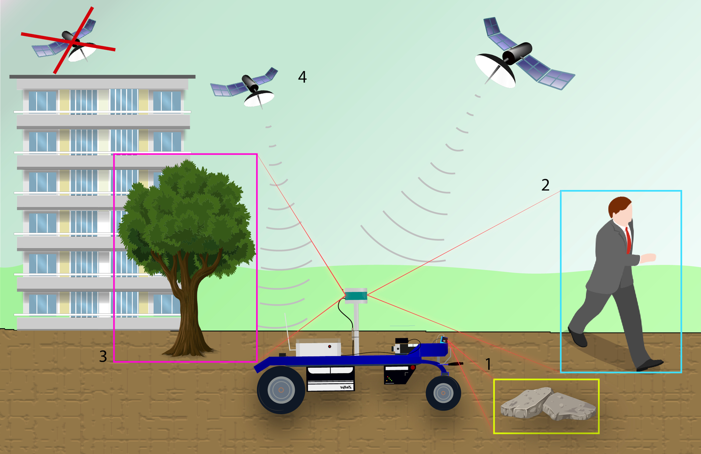
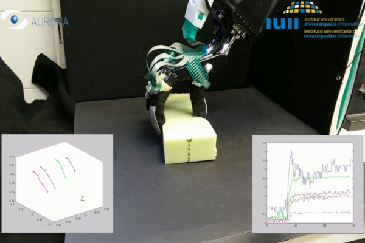
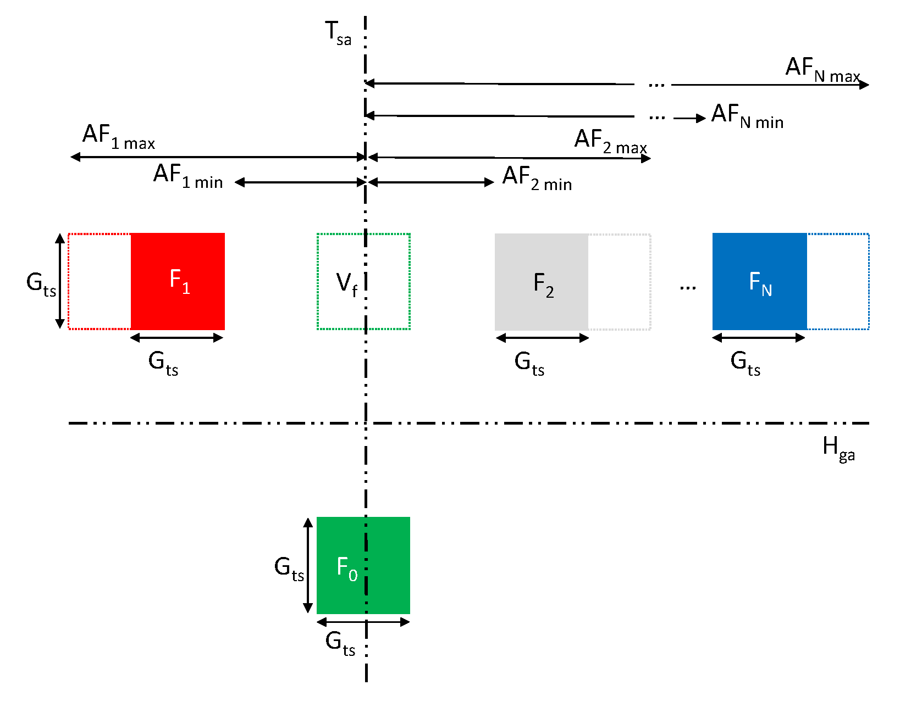

AUROVA
Team
Research
Projects
Autonomous Mobile Robots
Intelligent Manipulation
Theses
Autonomous Mobile Robots
Autonomous navigation in outdoor environments
Feature-based geo-Localization
LiDAR odometry
Visual control
Human-robot interaction

DualQuat-LOAM: LiDAR odometry and mapping parameterized on dual quaternions
- 2025
Edison Velasco-Sánchez,
Luis F. Recalde,
Guanrui Li,
Francisco A. Candelas,
Santiago T. Puente,
Fernando Torres
Robotics and Autonomous Systems, Elsevier
Geo-Localization Based on Dynamically Weighted Factor-Graph
- 2024
Miguel Ángel Muñoz-Bañón,
Alejandro Olivas,
Edison Velasco-Sánchez,
Francisco A. Candelas,
Fernando Torres
IEEE Robotics and Automation Letters + IEEE/RSJ International Conference on Intelligent Robots and Systems (IROS)
Visual Servoing NMPC Applied to UAVs for Photovoltaic Array Inspection
- 2024
Edison Velasco-Sánchez,
Luis F. Recalde,
Bryan S. Guevara
José Varela-Aldás,
Francisco A. Candelas,
Santiago T. Puente,
Daniel C. Gandolfo
IEEE Robotics and Automation Letters + IEEE/RSJ International Conference on Intelligent Robots and Systems (IROS)
Obstacle Detection with Differences of Normals in Unorganized Point Clouds for Mobile Robotics
- 2023
Edison Velasco-Sánchez,
Alejandro Olivas,
Luis F. Recalde,
Bryan S. Guevara,
Francisco A. Candelas
IEEE Seventh Ecuador Technical Chapters Meeting (ECTM)
Robust Single Object Tracking and Following by Fusion Strategy
- 2023
Alejandro Olivas,
Miguel Ángel Muñoz-Bañón,
Edison Velasco-Sánchez,
Fernando Torres
International Conference on Informatics in Control, Automation and Robotics (ICINCO)
Robust Self-Tuning Data Association for Geo-Referencing Using Lane Markings
- 2023
Miguel Ángel Muñoz-Bañón,
Jan-Hendrik Pauls,
Haohao Hu,
Christoph Stiller,
Francisco A. Candelas,
Fernando Torres
IEEE Robotics and Automation Letters + IEEE International Conference on Robotics and Automation (ICRA)
OpenStreetMap-Based Autonomous Navigation With LiDAR Naive-Valley-Path Obstacle Avoidance
- 2022
Miguel Ángel Muñoz-Bañón,
Edison Velasco-Sánchez,
Francisco A. Candelas,
Fernando Torres
IEEE Transactions on Intelligent Transportation Systems
Show more
Intelligent Manipulation

Grasp pose estimation
Grasp stability
Tactile sensing
Reinforcement Learning
Cooperative manipulation

QDGset: A Large Scale Grasping Dataset Generated with QD
- 2025
Johann Huber,
François Hélénon,
Mathilde Kappel,
Ignacio de Loyola Páez-Ubieta,
Santiago T. Puente,
Pablo Gil,
Faïz Ben Amar,
Stéphane Doncieux
IEEE International Conference on Robotics and Automation (ICRA)
Grasping Force Estimation in Markerless Visuo-Tactile Sensors
- 2024
Julio Castaño-Amorós,
Pablo Gil
IEEE Sensors Journal
Measuring Object Rotation via Visuo-Tactile Segmentation of Grasping Region
- 2023
Julio Castaño-Amorós,
Pablo Gil
IEEE Robotics and Automation Letters (RA-L)
Detection and Depth Estimation for Domestic Waste in Outdoor Environments by Sensors Fusion
- 2023
Ignacio de Loyola Páez-Ubieta,
Edison Velasco-Sánchez,
Santiago T. Puente,
Francisco A. Candelas
22nd World Congress of the International Federation of Automatic Control (IFAC) & IFAC-PapersOnLine
Vision and Tactile Robotic System to Grasp Litter in Outdoor Environments
- 2023
Ignacio de Loyola Páez-Ubieta,
Julio Castaño-Amorós,
Santiago T. Puente,
Pablo Gil
Journal of Intelligent and Robotic Systems (JINT)
Visual-Tactile Manipulation to Collect Household Waste in Outdoor
- 2023
Julio Castaño-Amorós,
Ignacio de Loyola Páez-Ubieta,
Pablo Gil,
Santiago T. Puente
Revista Iberoamericana de Automática e Informática Industrial (RIAI)
Show more
Theses
Multisensorial perception for grasping objects with multifingered grippers
Ignacio de Loyola Páez-Ubieta
Directors: Santiago T. Puente
30-07-2025
Pose Estimation and Control of Mobile Robots on Unstructured Environments
Edison Velasco-Sánchez
Directors: Francisco A. Candelas, Santiago T. Puente
20-11-2024
Autonomous Navigation Based on Geo-Referenced Public Maps
Miguel Ángel Muñoz-Bañón
Directors: Fernando Torres Medina, Francisco A. Candelas Herías
07-12-2022
Development of a Complete Autonomous Navigation System Based on GNSS and LiDAR for Ground Robots Operating in Dynamic and Unstructured Environments
Iván del Pino Bastida
Directors: Fernando Torres Medina, Juan Andrade Cetto
02-09-2021
Robotic Manipulation Based on Visual and Tactile Perception
Brayan Stiven Zapata Impata
Director: Pablo Gil Vázquez
17-09-2020
Tactile Recognition and Control Applied to Deformable Object Manipulation Tasks
Ángel Delgado Rodríguez
Directors: Fernando Torres Medina, Carlos Alberto Jara Bravo
27-09-2017
Dynamic Visual Servoing of Robot Manipulators: Optimal Framework with Dynamic Perceptibility and Chaos Compensation
Javier Pérez Alepuz
Directors: Jorge Pomares Baeza, Gabriel Jesús García Gómez
01-09-2017
Embedded Arquitecture in FPGA for Dynamic Visual Control of Robotic Manipulators Based on Image
Aiman Alabdo
Directors: Jorge Pomares Baeza, Gabriel Jesús García Gómez
04-07-2017
Geometric Recognition of 3D Objects and Deformation Detection in Robotic Manipulation
Carlos Manuel Mateo Agulló
Directors: Pablo Gil Vázquez, Fernando Torres Medina
03-07-2017
Safe Human-Robot Interaction Based on Multi-sensor Fusion and Dexterous Manipulation Planning
Juan A. Corrales Ramón
Directors: Fernando Torres Medina, Francisco A. Candelas Herías
25-03-2010
Self-Calibrating Visual-Force Control for Trajectory Tracking in Cooperative Robotic Tasks
Gabriel Jesús García Gómez
Directors: Jorge Pomares Baeza, Fernando Torres Medina
25-03-2010
Contributions to constructive and collaborative learning on the Internet. Application to virtual and remote industrial robotics laboratories.
Carlos A. Jara Bravo
Directors: Francisco A. Candelas Herías, Fernando Torres Medina
22-01-2010
Strategies for Identifying Occlusions and Monocular Planning for Improved Visual Scene Perception
Pablo Gil Vázquez
Directors: Fernando Torres Medina, Oscar Reinoso García
17-04-2008
Cooperative robot-robot and human-robot manipulation. Application to flexible automatic disassembly systems
Carolina S. Diaz Baca
Directors: Fernando Torres Medina, Santiago T. Puente Méndez
11-10-2007
Indirect 2D visual control for timeless tracking of trajectories and its application to visual-force control strategies in manipulators
Jorge Pomares Baeza
Director: Fernando Torres Medina
07-05-2004
Non-destructive automatic disassembly for component re-use. Application to PC disassembly
Santiago T. Puente Méndez
Director: Fernando Torres Medina
16-12-2002
Morphological processing of colour images. Application to geodetic reconstruction
Francisco Gabriel Ortíz Zamora
Director: Fernando Torres Medina
23-07-2002
Extending spatio-temporal planning techniques to computer vision systems
Francisco Andrés Candelas Herías
Director: Fernando Torres Medina
16-11-2001
Show more